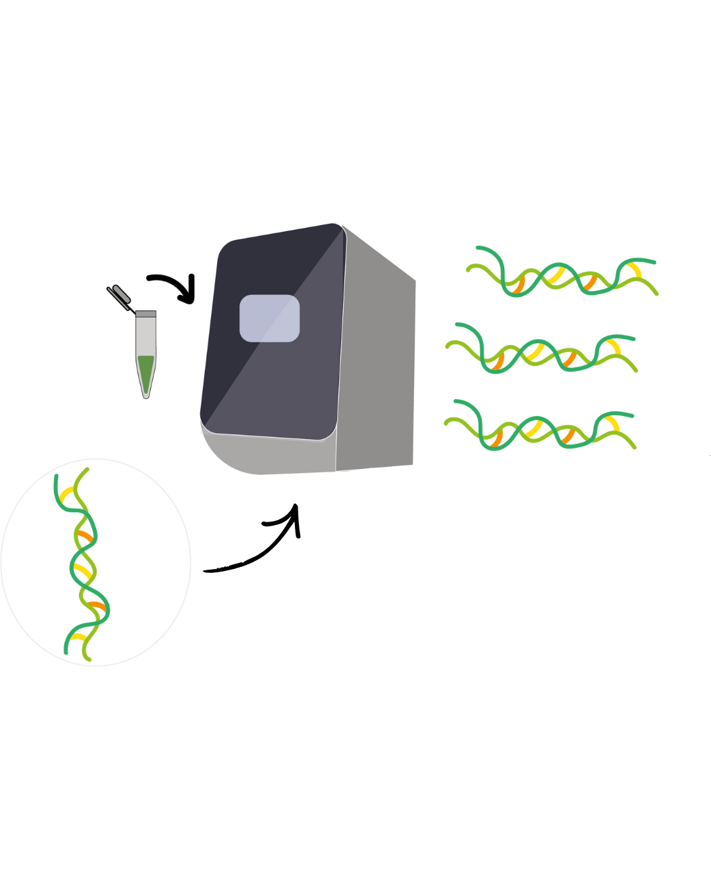
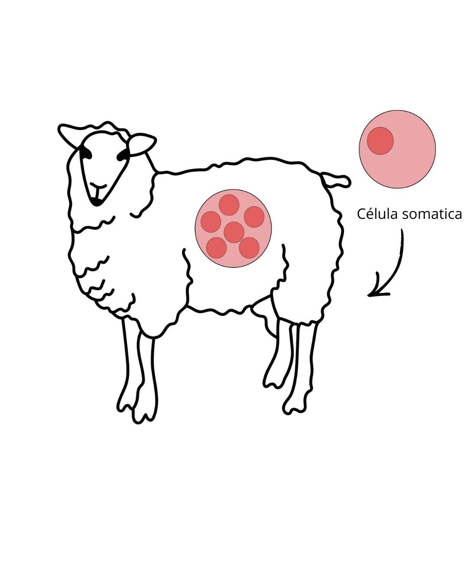

¿Qué es lo primero que se nos viene a la cabeza cuando hablamos de clonación? Laboratorios futuristas, copias humanas, experimentos fuera de control... Sin embargo, la realidad es que la clonación es un proceso mucho más cercano, antiguo y natural de lo que imaginamos.
¿Qué es la clonación?
La clonación (también llamada clonaje o clonado) consiste en la obtención de un clon: un conjunto de elementos genéticamente idénticos entre sí y a su precursor. Estos elementos pueden ser moléculas, células, tejidos, órganos u organismos pluricelulares completos.
Tipos de clonación
Clonación molecular
Clonación de genes o fragmentos de ADN/ARN. Incluye la PCR, usada diariamente en microbiología y diagnóstico. No se crea vida, solo se amplifica información genética.
Clonación celular
Amplificación de material genético en células hospedadoras mediante vectores. Permite producir insulina, vacunas, enzimas y proteínas terapéuticas.
Clonación de tejidos
Usa células madre para generar tejidos u órganos. Es parte del desarrollo natural y la regeneración de nuestro cuerpo.

La PCR es uno de los ejemplos más cotidianos de clonación molecular
Células madre: el núcleo del debate
Las células madre son células indiferenciadas capaces de autorrenovarse y diferenciarse en distintos tipos celulares. Según su potencial:
- Totipotentes: capaces de formar un organismo completo
- Pluripotentes: capaces de formar casi todos los tejidos
- Multipotentes: restringidas a ciertos linajes celulares

Clonación celular mediante vectores y ADN recombinante
El verdadero conflicto: clonar organismos completos
La problemática surge cuando se intenta clonar organismos pluricelulares complejos, especialmente mamíferos. El caso más emblemático es la oveja Dolly, el primer mamífero clonado a partir de una célula somática.
- Baja eficiencia del proceso
- Fallos en el desarrollo embrionario
- Problemas epigenéticos
- Envejecimiento prematuro

La oveja Dolly, un hito científico que también reveló grandes limitaciones
¿Clones idénticos = individuos idénticos?
No. Dos organismos pueden ser genotípicamente muy similares, pero nunca serán la misma persona. La identidad no depende solo de los genes:
- Epigenética
- Ambiente y experiencias de vida
- Historia personal
El caso de los lobos y la "resurrección" de especies
Proyectos recientes buscan "revivir" especies extintas. Pero es fundamental aclarar algo: no se ha clonado directamente ningún organismo extinto. El ADN antiguo se encuentra fragmentado e incompleto. Lo que hace la ciencia es diferente:
- Se recuperan fragmentos de ADN antiguo
- Se secuencian y comparan con especies actuales emparentadas
- Se identifican genes clave
- Se modifican genomas de organismos vivos cercanos evolutivamente

Los proyectos de "resurrección" de especies generan grandes preguntas científicas y éticas
¿Por qué esto es problemático?
Desde la ciencia
- El genoma nunca es completo
- El ambiente original ya no existe
- El desarrollo es impredecible
Desde la ética
- ¿Dónde vivirían estos organismos?
- ¿Qué rol ecológico cumplirían?
- ¿Quién asume su bienestar?
Los organismos no existen aislados: forman parte de ecosistemas que, en muchos casos, ya desaparecieron.
La perspectiva microbiana: el presente silencioso
Paradójicamente, mientras intentamos recrear grandes organismos extintos, la clonación microbiana ha sido una aliada silenciosa del avance científico durante décadas: se clonan genes todos los días, se estudia la evolución molecular, se reconstruyen linajes ancestrales y se producen medicamentos esenciales.
La clonación no es el futuro: es parte del presente y del pasado de la biología.
El desafío no está en la técnica en sí, sino en cómo, para qué y hasta dónde decidimos usarla.
La ciencia avanza, pero la ética debe avanzar con ella.